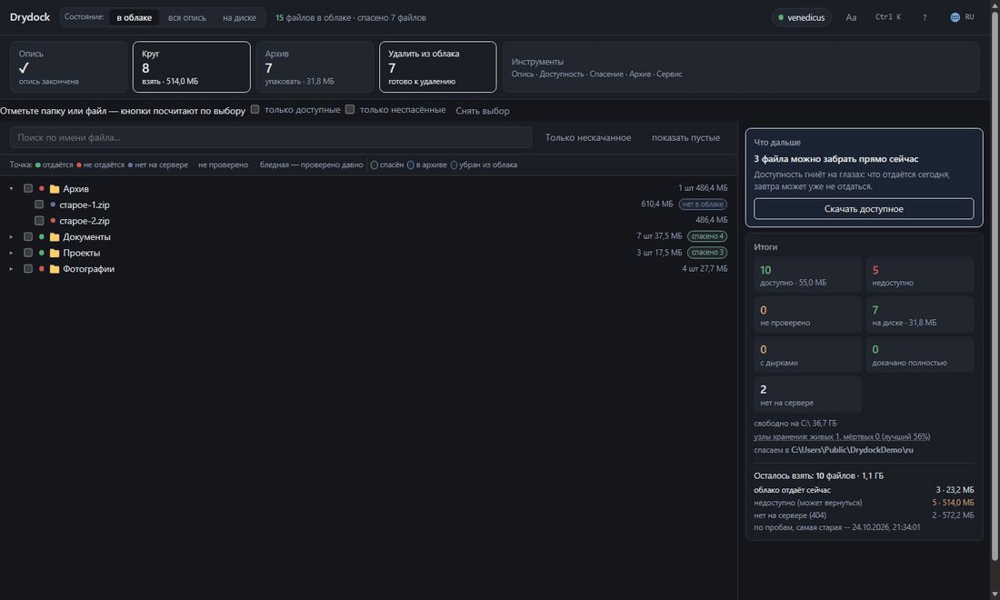

Drydock описывает коллекцию на Яндекс.Диске, забирает то, что облако ещё
отдаёт, сверяет хеши и пакует спасённое в архивы. Написан для случая,
когда каталог цел, а файлы не скачиваются: клиент синхронизации видит,
что файла нет локально, и получает ту же ошибку.
Файлы то отдаются, то нет — часть возвращается через дни. Поэтому
программу имеет смысл держать запущенной подольше или возвращаться к ней
в другие дни. Сделана под свою коллекцию: в первый день вытащила
половину, сейчас — почти 98%.
MoneroXMR, своя сеть45LuFsk9rr7JwepcsfaspeTwyUVy7QbbWUbA1hsBj374h3BPhyPvpqWLVfQM9kDJBddZKsQcNbDEhS3ZTdoritJvGLdsWPF
У Ethereum, BNB Chain и Polygon один и тот же адрес — сеть
выбирается при отправке, и указать нужно именно её.USDT и USDC дешевле в TRC-20 и TON: комиссия — центы.
В Ethereum комиссия может съесть половину суммы.Lightning — для небольших сумм: доходит за секунды, комиссия
почти нулевая. Адрес вида name@domain понимает любой
Lightning-кошелёк.
Что умеет
Описьзаписывает имя, размер, хеши и место в дереве — включая файлы, которые уже не скачать
Пробапроверяет доступность без скачивания: первый и последний байт
Кругкачает всё, что отдаётся, и перепроверяет недоступное, пока не остановишь
Архивтома 3.9 / 1.9 ГБ или одним файлом, с проверкой после упаковки
Удалениеосвобождает облако тем, что уже проверено; три уровня строгости
Здоровьепоказывает, почему не выходит: причины отказов, узлы, задачи
Экспортвыгружает опись в CSV или JSON — с хешами и состоянием

Files from a cloud that stopped serving them
Drydock inventories a Yandex.Disk collection, takes whatever the cloud
still serves, verifies hashes and packs the rescued files into archives.
It is written for the case where the catalogue is intact but the files do
not download: a sync client sees the file missing locally and gets the
same error.
Files come and go — some come back days later. That is why the program is
worth leaving running for a while, or starting again on other days. It was
built for a real collection: half of it on the first day, almost 98% now.
Windows, Python 3.12+ (or the ready-made .exe), MIT.
MoneroXMR, its own chain45LuFsk9rr7JwepcsfaspeTwyUVy7QbbWUbA1hsBj374h3BPhyPvpqWLVfQM9kDJBddZKsQcNbDEhS3ZTdoritJvGLdsWPF
Ethereum, BNB Chain and Polygon share one address — the network is
chosen when you send, and it has to be the right one.USDT and USDC are cheaper on TRC-20 and TON: fees are cents. On
Ethereum the fee can eat half the amount.Lightning is for small sums: seconds to arrive, near-zero fee.
The name@domain form is understood by any Lightning wallet.
What it does
Inventoryrecords name, size, hashes and place in the tree — including files that can no longer be downloaded
Probechecks availability without downloading: first and last byte
Loopdownloads everything served and re-checks the rest until stopped
Archive3.9 / 1.9 GB volumes or a single file, verified after packing
Deletefrees the cloud with what is already verified; three strictness levels
Healthshows why it fails: reasons, nodes, jobs
Exportwrites the inventory to CSV or JSON — with hashes and state